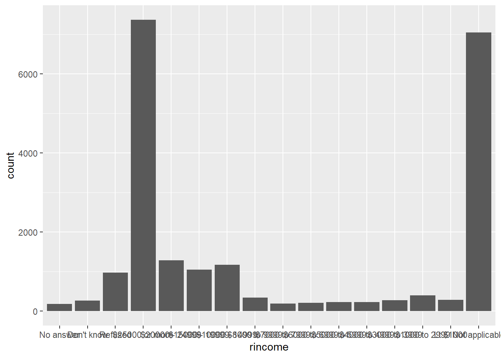
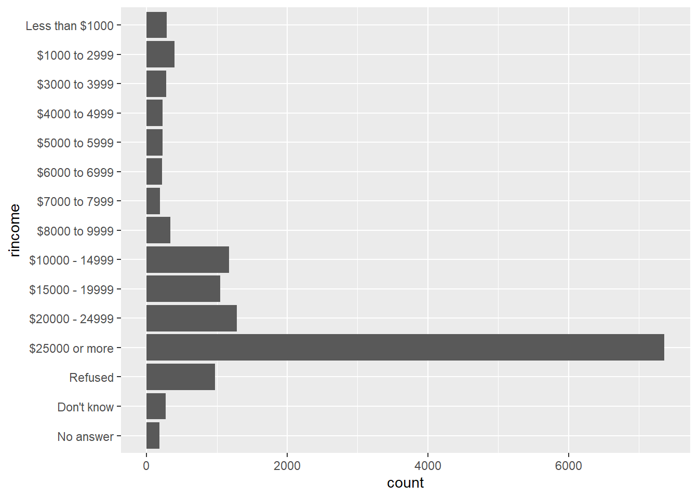
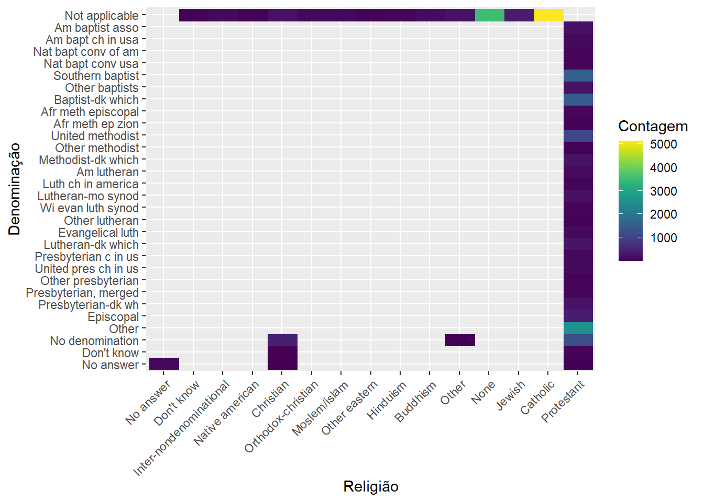
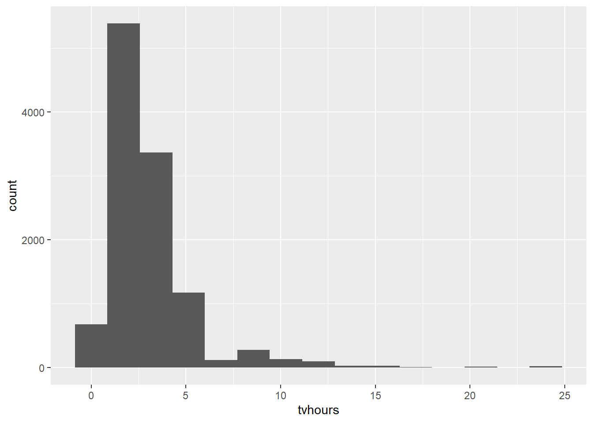
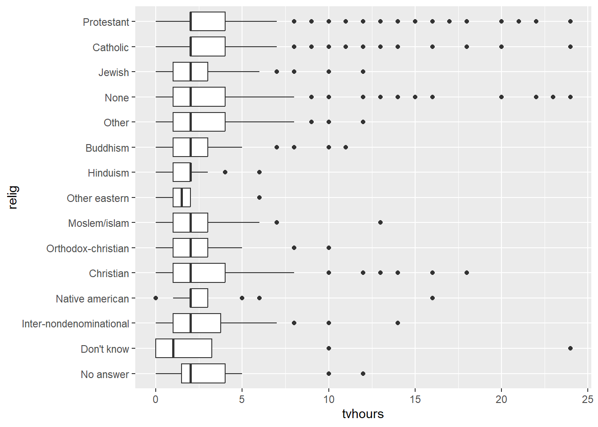
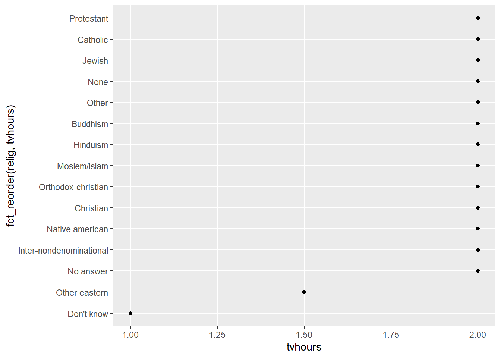
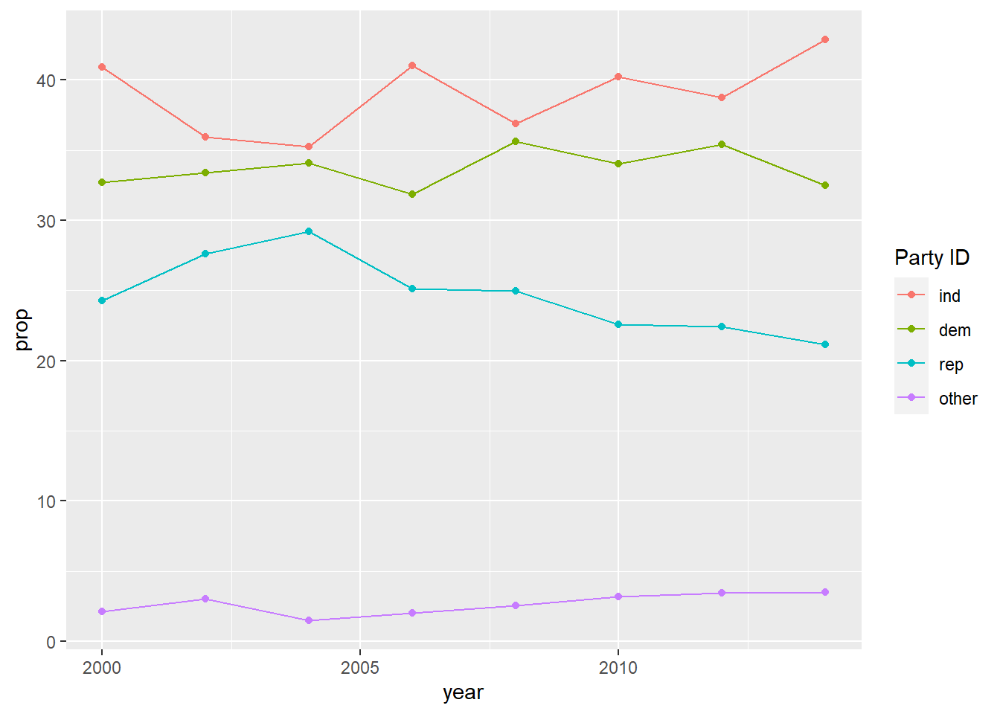
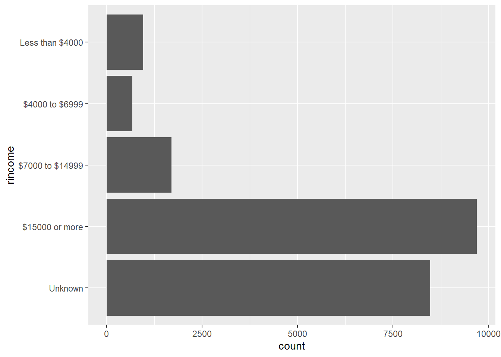

Capítulo 12 Fatores com forcats
12.3 General Social Survey
Exercício 12.3.1
Explore a distribuição de rincome (reported income - renda relatada). O que torna o gráfico de barra padrão tão difícil de entender? Como você melhoraria o gráfico?
Solução.

Como temos muitas classes possíveis para rincome, a visualização fica comprometida, por isso vamos inverter os eixo do gráfico.
 Vamos também remover a categoria
Vamos também remover a categoria Not applicabe, que não agrega nenhuma informação o nosso gráfico, uma vez que queremos avaliar apenas as pessoas que possuem uma renda informada.
gss_cat %>%
filter(rincome != "Not applicable") %>%
ggplot(aes(rincome)) +
geom_bar() +
coord_flip()
Vamos também substituir o termo LT $1000 por Less than $1000.
gss_cat %>%
filter(rincome != "Not applicable") %>%
mutate(rincome = fct_recode(rincome, "Less than $1000" = "Lt $1000")) %>%
ggplot(aes(rincome)) +
geom_bar() +
coord_flip()
Ainda poderíamos pensar em se é possível agrupar algumas das classes para tornar a visualização melhor.
Exercício 12.3.2
Qual é a relig mais comum nessa pesquisa? Qual é a partyid mais comum?
Solução.
## # A tibble: 15 × 2
## relig n
## <fct> <int>
## 1 Protestant 10846
## 2 Catholic 5124
## 3 None 3523
## 4 Christian 689
## 5 Jewish 388
## 6 Other 224
## 7 Buddhism 147
## 8 Inter-nondenominatio… 109
## 9 Moslem/islam 104
## 10 Orthodox-christian 95
## 11 No answer 93
## 12 Hinduism 71
## 13 Other eastern 32
## 14 Native american 23
## 15 Don't know 15A religião com maior número de adeptos é a Protestante.
## # A tibble: 10 × 2
## partyid n
## <fct> <int>
## 1 Independent 4119
## 2 Not str democrat 3690
## 3 Strong democrat 3490
## 4 Not str republican 3032
## 5 Ind,near dem 2499
## 6 Strong republican 2314
## 7 Ind,near rep 1791
## 8 Other party 393
## 9 No answer 154
## 10 Don't know 1E o partido com maior número de afiliados é o Independent.
Exercício 12.3.3
A qual relig é aplicada denom (denominação)? Como você pode descobrir isso com uma tabela? e com uma visualização?
Solução. Primeiro vamos verificar as categorias possíveis para relig e para denom:
## relig:## [1] "No answer" "Don't know"
## [3] "Inter-nondenominational" "Native american"
## [5] "Christian" "Orthodox-christian"
## [7] "Moslem/islam" "Other eastern"
## [9] "Hinduism" "Buddhism"
## [11] "Other" "None"
## [13] "Jewish" "Catholic"
## [15] "Protestant" "Not applicable"##
## denom:## [1] "No answer" "Don't know" "No denomination"
## [4] "Other" "Episcopal" "Presbyterian-dk wh"
## [7] "Presbyterian, merged" "Other presbyterian" "United pres ch in us"
## [10] "Presbyterian c in us" "Lutheran-dk which" "Evangelical luth"
## [13] "Other lutheran" "Wi evan luth synod" "Lutheran-mo synod"
## [16] "Luth ch in america" "Am lutheran" "Methodist-dk which"
## [19] "Other methodist" "United methodist" "Afr meth ep zion"
## [22] "Afr meth episcopal" "Baptist-dk which" "Other baptists"
## [25] "Southern baptist" "Nat bapt conv usa" "Nat bapt conv of am"
## [28] "Am bapt ch in usa" "Am baptist asso" "Not applicable"Nossa experiência nos diz que as denominações se referem à religião protestante, mas, para validar nossa hipótese, iremos remover os registros com denominação nas categorias Not applicable, No answer, Don't know e No denomination.
gss_cat %>%
filter(!denom %in% c("Not applicable", "No answer", "Don't know", "No denomination")) %>%
count(relig)## # A tibble: 1 × 2
## relig n
## <fct> <int>
## 1 Protestant 9559Uma outra possibilidade é:
## # A tibble: 47 × 3
## relig denom n
## <fct> <fct> <int>
## 1 No answer No a… 93
## 2 Don't know Not … 15
## 3 Inter-nondenom… Not … 109
## 4 Native american Not … 23
## 5 Christian No a… 2
## 6 Christian Don'… 11
## 7 Christian No d… 452
## 8 Christian Not … 224
## 9 Orthodox-chris… Not … 95
## 10 Moslem/islam Not … 104
## # ℹ 37 more rowsPara a forma gráfica, podemos usar o seguinte:
gss_cat %>%
count(relig, denom) %>%
ggplot(aes(relig, denom, fill = n)) +
geom_raster() +
theme(axis.text.x = element_text(angle = 45, hjust = 1)) +
labs(
x = "Religião",
y = "Denominação",
fill = "Contagem"
) +
scale_fill_viridis()
12.4 Modificando a ordem dos fatores
Exercício 12.4.1
Há alguns números suspeitosamente altos em tvhours. A média pe um bom resumo?
Solução. Inicialmente vamos avaliar a distribuição de tvhours.
## Warning: Removed 10146 rows containing non-finite values (`stat_bin()`).
## Warning: Removed 10146 rows containing non-finite values (`stat_boxplot()`). De fato, há muitos valores discrepantes, nesse caso, seria melhor utilizarmos a mediana.
gss_cat %>%
group_by(relig) %>%
summarise(tvhours = median(tvhours, na.rm = TRUE)) %>%
ggplot(aes(tvhours, fct_reorder(relig, tvhours))) +
geom_point()
Exercício 12.4.2
Para cada fator em gss_cat, identifique se a ordem dos níveis é arbitrária ou com princípios.
Solução. Primeiro vamos visualizar o cabeçalho do conjunto de dados para identificar as colunas que são fatores.
## # A tibble: 6 × 9
## year marital age race
## <int> <fct> <int> <fct>
## 1 2000 Never mar… 26 White
## 2 2000 Divorced 48 White
## 3 2000 Widowed 67 White
## 4 2000 Never mar… 39 White
## 5 2000 Divorced 25 White
## 6 2000 Married 25 White
## # ℹ 5 more variables:
## # rincome <fct>,
## # partyid <fct>,
## # relig <fct>, denom <fct>,
## # …Agora, vamos listar as categorias em cada fator para avalia se são variáveis ordinais ou não.
## [1] "No answer" "Never married" "Separated" "Divorced"
## [5] "Widowed" "Married"## [1] "Other" "Black" "White" "Not applicable"## [1] "No answer" "Don't know" "Refused" "$25000 or more"
## [5] "$20000 - 24999" "$15000 - 19999" "$10000 - 14999" "$8000 to 9999"
## [9] "$7000 to 7999" "$6000 to 6999" "$5000 to 5999" "$4000 to 4999"
## [13] "$3000 to 3999" "$1000 to 2999" "Lt $1000" "Not applicable"## [1] "No answer" "Don't know" "Other party"
## [4] "Strong republican" "Not str republican" "Ind,near rep"
## [7] "Independent" "Ind,near dem" "Not str democrat"
## [10] "Strong democrat"## [1] "No answer" "Don't know"
## [3] "Inter-nondenominational" "Native american"
## [5] "Christian" "Orthodox-christian"
## [7] "Moslem/islam" "Other eastern"
## [9] "Hinduism" "Buddhism"
## [11] "Other" "None"
## [13] "Jewish" "Catholic"
## [15] "Protestant" "Not applicable"## [1] "No answer" "Don't know" "No denomination"
## [4] "Other" "Episcopal" "Presbyterian-dk wh"
## [7] "Presbyterian, merged" "Other presbyterian" "United pres ch in us"
## [10] "Presbyterian c in us" "Lutheran-dk which" "Evangelical luth"
## [13] "Other lutheran" "Wi evan luth synod" "Lutheran-mo synod"
## [16] "Luth ch in america" "Am lutheran" "Methodist-dk which"
## [19] "Other methodist" "United methodist" "Afr meth ep zion"
## [22] "Afr meth episcopal" "Baptist-dk which" "Other baptists"
## [25] "Southern baptist" "Nat bapt conv usa" "Nat bapt conv of am"
## [28] "Am bapt ch in usa" "Am baptist asso" "Not applicable"Apenas rincome pode ser ordenada.
12.5 Modificando níveis de fatores
Exercício 12.5.1
Como a proporção de pessoas identificadas como Democratas, Republicanos e Independentes mudou ao longo do tempo?
Solução. Para solucionar este exercício, vamos realizar os seguintes passos:
- Recodificar os valores do fator
partyid; - Contar os respondentes filiados a cada partido por ano;
- Calcular as proporções por ano; e
- Plotar o resultado no gráfico.
gss_cat %>%
mutate(partyid = fct_collapse(partyid,
other = c("No answer", "Don't know", "Other party"),
rep = c("Strong republican","Not str republican"),
ind = c("Ind,near rep", "Independent", "Ind,near dem"),
dem = c("Strong democrat", "Not str democrat"))
) %>%
count(year, partyid) %>%
group_by(year) %>%
mutate(prop = n * 100 / sum(n)) %>%
ggplot(aes(
x = year,
y = prop,
color = fct_reorder2(partyid, year, prop)
)) +
geom_line() +
geom_point() +
labs(color = "Party ID")
Exercício 12.5.2
Como você poderia colapsar rincome em um conjunto de pequeno de categorias?
Solução.
## [1] "No answer" "Don't know" "Refused" "$25000 or more"
## [5] "$20000 - 24999" "$15000 - 19999" "$10000 - 14999" "$8000 to 9999"
## [9] "$7000 to 7999" "$6000 to 6999" "$5000 to 5999" "$4000 to 4999"
## [13] "$3000 to 3999" "$1000 to 2999" "Lt $1000" "Not applicable"gss_cat %>%
mutate(
rincome = fct_collapse(rincome,
"Unknown" = c("No answer", "Don't know", "Refused", "Not applicable"),
"Less than $4000" = c("Lt $1000", str_c("$", c("1000", "3000"), " to ", c("2999", "3999"))),
"$4000 to $6999" = c(str_c("$", c("4000", "5000", "6000"), " to ", c("4999", "5999", "6999"))),
"$7000 to $14999" = c(str_c("$", c("7000", "8000", "10000"), " to ", c("7999", "9999", "14999")), "$10000 - 14999"),
"$15000 or more" = c("$15000 - 19999", "$20000 - 24999", "$25000 or more")
)
) %>%
ggplot(aes(rincome)) +
geom_bar() +
coord_flip()## Warning: There was 1 warning in `mutate()`.
## ℹ In argument: `rincome = fct_collapse(...)`.
## Caused by warning:
## ! Unknown levels in `f`: $10000 to 14999